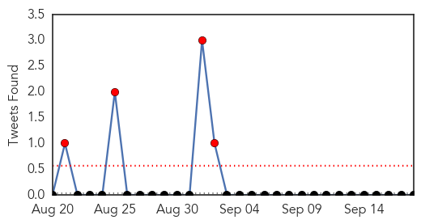

30 Day Trends
Web: 5 alerts, 0 warnings
Twitter: 4 alerts, 0 warnings
Top Articles:
- 1.000
- Influenza Activity — United States and Worldwide, May 24–September 5, 2015
- 0.997
- Sedgwick County Health Department encourages residents to get a flu shot
- 0.996
- More Effective Flu Vaccine Expected This Year
- 0.995
- As flu season starts, CDC urges vaccination
- 0.990
- This year’s flu vaccine better than last year: US
- 0.988
- Health Department to offer flu vaccine to students
- 0.988
- Beebe Offering Free Flu Clinics
- 0.986
- CDC Predicts Flu Vaccine Will Be More Effective Than Last Year
- 0.983
- Will this year's flu shot work better than last year's?
- 0.981
- This year's flu vaccine better than last year
- 0.965
- Doctor Urging Flu Vaccines, Despite 2014's Low Effectiveness
- 0.951
- Influenza Vaccine In Young Adults May Help Protect Seniors
- 0.930
- Three adults found to have influenza
- 0.901
- Top state health official urges Iowans to get flu vaccine
- 0.884
- Ghana, Business Advice, Jobs, News, Business Directory, Real Estate, Finance, Forms, Auto
- 0.877
- WVPA Congress 2015 Highlights: Vets, Vaccinations and Disease Discussions
- 0.873
- Long-term care workers, providers most lax about vaccinations: CDC
- 0.834
- Nigeria lost 79,134 birds worth over N85 million to Avian Influenza
- 0.773
- Untitled Article
- 0.724
- Time bombs ticking in Siberia
- 0.574
- Accomack County officials plan for avian flu threat
Top Tweets:
-
No tweets found for Sep 18, 2015
Web/News Articles

Tweets
Article Locations

Article Confidences